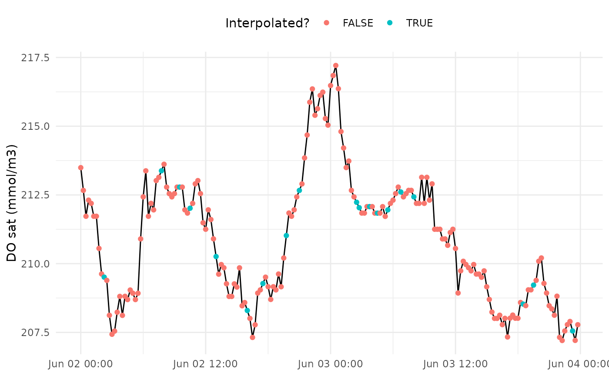

Create a diagnostic plot showing interpolated values prior to metabolism estimates
Source:R/interp_plot.R
interp_plot.RdCreate a diagnostic plot showing interpolated values prior to metabolism estimates
Usage
interp_plot(
dat,
param = c("DO_obs", "DO_sat", "Z", "Temp", "Sal", "PAR", "WSpd", "sc"),
Z,
interval,
ndays = 1
)Arguments
- dat
input data frame
- param
character string of the parameter to plot, one of
DO_obs,DO_sat,Z,Temp,Sal,PAR,WSpd, orsc- Z
numeric as single value for water column depth (m) or vector equal in length to number of rows in
dat- interval
timestep interval in seconds
- ndays
numeric for number of days in
datfor optimizing the metabolic equation, see details
Value
A ggplot object
Details
Missing values in the input data can also be interpolated prior to estimating metabolism. This is the default behavior and it is the responsibility of the user to verify that these interpolated values are not wildly inaccurate. Missing values are linearly interpolated between non-missing values at the time step specified by the value in interval. This works well for small gaps, but can easily create inaccurate values at gaps larger than a few hours. The plot from this function can be used to visually assess the interpolated gaps.
Examples
library(dplyr)
# get four days of data
dat <- exdat %>%
filter(lubridate::month(DateTimeStamp) == 6) %>%
filter(lubridate::day(DateTimeStamp) %in% 1:4)
# create missing values
set.seed(222)
dat <- dat %>%
slice_sample(prop = 0.9) %>%
arrange(DateTimeStamp)
interp_plot(dat, Z = 1.85, interval = 900, param = 'DO_sat')
#> Warning: Incomplete daily observations removed at start of dat
#> Warning: Incomplete daily observations removed at end of dat
#> Warning: More than one time step or missing values will be interpolated
